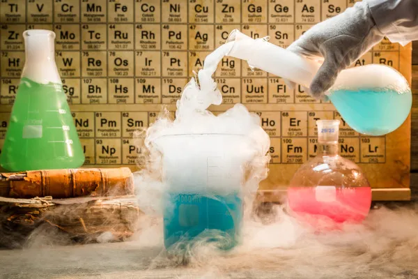

https://mundoeducacao.uol.com.br/quimica/reacoes-quimicas.htm
Reações Químicas
As reações químicas são transformações nas quais uma ou mais substâncias são convertidas em outras substâncias, com novas composições e propriedades. Elas acontecem constantemente na natureza, nos organismos vivos, nas indústrias e em atividades cotidianas, como cozinhar alimentos, queimar combustíveis e produzir medicamentos.
Estudar as reações químicas permite compreender como as substâncias interagem, como os produtos são formados e como representar essas transformações por meio de equações químicas.
1. O que é uma reação química?
Uma reação química ocorre quando os átomos das substâncias participantes se reorganizam, com rompimento e formação de ligações químicas. Como resultado, surgem substâncias com composições e propriedades diferentes das iniciais.
As substâncias presentes no início da reação são chamadas de reagentes. As substâncias formadas ao final são chamadas de produtos.
Um exemplo cotidiano é a formação da ferrugem. O ferro reage com o oxigênio na presença de água e forma produtos que contêm óxidos e hidróxidos de ferro. O processo real pode envolver várias etapas, mas demonstra como uma substância pode se transformar em outras.
Outro exemplo é a combustão do gás metano, presente no gás natural:
CH₄ + 2 O₂ → CO₂ + 2 H₂O
Nessa reação, o metano e o oxigênio são os reagentes. O dióxido de carbono e a água são os produtos.
2. Como reconhecer uma reação química?
Algumas transformações apresentam sinais visíveis que indicam a possibilidade de uma reação química.
- Formação de gás: aparecem bolhas durante uma reação, como na reação entre bicarbonato de sódio e um ácido.
- Formação de precipitado: surge um sólido ao misturar soluções que antes eram transparentes.
- Mudança de cor: uma substância apresenta uma nova coloração, como ocorre em algumas reações de oxidação.
- Liberação de luz: algumas reações emitem luz, como certas combustões.
- Variação de temperatura: a reação libera ou absorve energia térmica.
- Mudança de odor: podem surgir substâncias voláteis com odores diferentes.
Esses sinais são evidências, mas nenhum deles, isoladamente, comprova necessariamente que houve uma reação química. Por exemplo, a água fervendo forma bolhas sem se transformar em outra substância. Para confirmar uma reação, é preciso considerar o processo e as substâncias envolvidas.
3. Como representar uma reação química?
As reações químicas podem ser representadas por equações químicas, que utilizam símbolos e fórmulas para mostrar os reagentes e os produtos.
Considere a formação da água:
2 H₂ + O₂ → 2 H₂O
Essa equação pode ser interpretada da seguinte maneira:
- H₂: hidrogênio molecular.
- O₂: oxigênio molecular.
- H₂O: água.
- Seta (→): indica o sentido representado para a transformação, dos reagentes para os produtos.
- Coeficientes: os números antes das fórmulas indicam as proporções entre as quantidades de substâncias que participam da reação.
Em uma equação química, os reagentes aparecem à esquerda da seta, enquanto os produtos aparecem à direita.
Também podem ser utilizados símbolos para indicar o estado físico das substâncias:
- (s): sólido.
- (l): líquido.
- (g): gasoso.
- (aq): substância em solução aquosa.
Por exemplo:
AgNO₃(aq) + NaCl(aq) → AgCl(s) + NaNO₃(aq)
Nessa reação, duas soluções aquosas reagem e formam cloreto de prata sólido, indicado por AgCl(s). Esse sólido é um precipitado.
4. A conservação dos átomos
Em uma reação química comum, os átomos não são criados nem destruídos: eles apenas se reorganizam. Por isso, a quantidade de átomos de cada elemento precisa ser igual nos reagentes e nos produtos.
Esse princípio está relacionado à conservação da massa nas transformações químicas realizadas em um sistema fechado.
Observe a equação da formação da água:
2 H₂ + O₂ → 2 H₂O
Nos reagentes, existem quatro átomos de hidrogênio e dois de oxigênio. Nos produtos, também existem quatro átomos de hidrogênio e dois de oxigênio.
Essa igualdade é essencial para o balanceamento de equações químicas, assunto estudado com mais detalhes na próxima etapa.
Atenção: ao balancear uma equação, alteramos os coeficientes que ficam antes das fórmulas, e não os índices que fazem parte delas. Alterar um índice pode mudar a identidade da substância.
5. Principais tipos de reações químicas
Uma forma comum de classificar reações no Ensino Médio é observar o padrão de combinação ou reorganização dos reagentes. Essa classificação ajuda a reconhecer estruturas recorrentes nas equações.
5.1. Reação de síntese ou combinação
Na síntese, duas ou mais substâncias se combinam para formar um único produto principal.
Esquema geral:
A + B → AB
Exemplo: formação do óxido de magnésio.
2 Mg + O₂ → 2 MgO
O magnésio reage com o oxigênio, formando óxido de magnésio.
5.2. Reação de decomposição
Na decomposição, uma substância origina duas ou mais substâncias diferentes.
Esquema geral:
AB → A + B
Exemplo: decomposição da água oxigenada.
2 H₂O₂ → 2 H₂O + O₂
A água oxigenada se decompõe, formando água e oxigênio. Dependendo das condições, essa transformação pode ser acelerada por catalisadores.
5.3. Reação de simples troca ou deslocamento
Na simples troca, uma substância simples reage com uma substância composta, deslocando um elemento e formando outra substância simples e outra composta.
Esquema geral:
A + BC → AC + B
Exemplo: reação entre zinco e ácido clorídrico.
Zn + 2 HCl → ZnCl₂ + H₂
O zinco desloca o hidrogênio do ácido, formando cloreto de zinco e gás hidrogênio. Esse tipo de reação depende da reatividade das substâncias envolvidas.
5.4. Reação de dupla troca
Na dupla troca, dois compostos trocam componentes, geralmente íons, formando dois novos compostos.
Esquema geral:
AB + CD → AD + CB
Exemplo: reação entre nitrato de prata e cloreto de sódio.
AgNO₃ + NaCl → AgCl + NaNO₃
Os íons se reorganizam e o cloreto de prata, pouco solúvel em água, forma um precipitado.
Nem toda mistura de dois compostos iônicos em solução produz uma reação observável. Para que a reação ocorra de forma efetiva, pode haver formação de um precipitado, de um gás ou de uma substância pouco ionizada, como a água.
5.5. Reação de combustão
A combustão é uma reação em que uma substância reage com um agente oxidante, normalmente o oxigênio, liberando energia. Muitas combustões produzem calor e luz.
Na combustão completa de um hidrocarboneto, os produtos principais são dióxido de carbono e água.
Exemplo: combustão completa do metano.
CH₄ + 2 O₂ → CO₂ + 2 H₂O
Quando há oxigênio insuficiente, a combustão de hidrocarbonetos pode ser incompleta, formando monóxido de carbono (CO) e, em certas condições, carbono sólido (fuligem). O monóxido de carbono é um gás tóxico.
A combustão também é uma reação de oxidação-redução, ou redox. Portanto, uma reação pode pertencer a mais de uma classificação, dependendo do critério utilizado.
6. Outros tipos importantes de reação
6.1. Neutralização
A neutralização é uma reação entre um ácido e uma base. Em uma neutralização completa entre um ácido e uma base apropriados, os produtos incluem sal e água.
Exemplo:
HCl + NaOH → NaCl + H₂O
O ácido clorídrico reage com o hidróxido de sódio, formando cloreto de sódio e água.
A neutralização é importante em processos laboratoriais, no tratamento de efluentes e em aplicações controladas relacionadas à acidez.
6.2. Reação de precipitação
Uma reação de precipitação ocorre quando substâncias dissolvidas reagem e formam um produto sólido pouco solúvel, chamado precipitado.
Exemplo:
BaCl₂(aq) + Na₂SO₄(aq) → BaSO₄(s) + 2 NaCl(aq)
O sulfato de bário (BaSO₄) forma um sólido que se separa da solução.
6.3. Oxidação-redução (redox)
As reações redox envolvem transferência de elétrons ou alterações nos números de oxidação (NOX) dos elementos.
- Oxidação: perda de elétrons, acompanhada pelo aumento do NOX.
- Redução: ganho de elétrons, acompanhado pela diminuição do NOX.
Os dois processos ocorrem conjuntamente. Enquanto uma espécie perde elétrons, outra recebe esses elétrons.
Exemplo:
2 Na + Cl₂ → 2 NaCl
O sódio passa de NOX 0 para +1, sofrendo oxidação. O cloro passa de NOX 0 para −1, sofrendo redução.
As reações redox estão presentes na corrosão dos metais, no funcionamento de pilhas e baterias, na respiração celular e em muitas reações de combustão.
7. Energia nas reações químicas
Durante uma reação química, as ligações dos reagentes são rompidas e novas ligações são formadas. Esses processos envolvem energia.
7.1. Reações exotérmicas
Reações exotérmicas liberam energia para o ambiente, frequentemente na forma de calor. Em condições usuais, a energia liberada pode aquecer o recipiente ou o meio ao redor.
Exemplo: a combustão do metano libera energia.
CH₄ + 2 O₂ → CO₂ + 2 H₂O + energia
7.2. Reações endotérmicas
Reações endotérmicas absorvem energia do ambiente. A energia absorvida pode vir do calor, da luz ou de outras fontes.
Exemplo: a decomposição térmica do carbonato de cálcio exige aquecimento.
CaCO₃ + energia → CaO + CO₂
O fato de uma reação liberar ou absorver energia não determina, por si só, a velocidade com que ela ocorre. Algumas reações exotérmicas precisam de uma energia inicial para começar.
8. O que influencia a velocidade de uma reação?
A velocidade de uma reação indica quão rapidamente os reagentes são consumidos ou os produtos são formados. Alguns fatores podem modificar essa velocidade.
- Temperatura: o aumento da temperatura geralmente acelera a reação, pois aumenta a energia e a frequência de colisões eficazes entre as partículas.
- Concentração: em muitas reações, uma concentração maior de reagentes aumenta a frequência de colisões.
- Superfície de contato: um sólido triturado pode reagir mais rapidamente que o mesmo material em um bloco, pois apresenta maior área de contato.
- Catalisador: aumenta a velocidade ao oferecer um caminho de reação com menor energia de ativação, sem ser consumido globalmente pela reação.
- Natureza dos reagentes: diferentes substâncias possuem diferentes reatividades e mecanismos de reação.
Esses fatores são estudados com mais profundidade no conteúdo de cinética química.
9. Exercícios resolvidos
Clique nas tarjas para mostrar os exercícios resolvidos
Questão 1 — Identificação de reagentes e produtos
Considere a equação:
2 H₂ + O₂ → 2 H₂O
Quais são os reagentes e qual é o produto?
Resolução:os reagentes são H₂ e O₂, que aparecem à esquerda da seta. O produto é H₂O, que aparece à direita.
Questão 2 — Classificação de uma reação
Classifique a reação:
2 Mg + O₂ → 2 MgO
Resolução:duas substâncias reagentes se combinam para formar um produto principal. Portanto, é uma reação de síntese ou combinação. Ela também é uma reação redox.
Questão 3 — Decomposição
Classifique a reação:
CaCO₃ → CaO + CO₂
Resolução:uma substância origina duas substâncias diferentes. Portanto, é uma reação de decomposição.
Questão 4 — Precipitação
Na reação entre BaCl₂(aq) e Na₂SO₄(aq), qual produto forma o precipitado?
Resolução:o produto sólido é BaSO₄(s), o sulfato de bário.
Questão 5 — Conservação dos átomos
Na equação 2 H₂ + O₂ → 2 H₂O, quantos átomos de hidrogênio e oxigênio aparecem em cada lado?
Resolução:nos reagentes existem quatro átomos de hidrogênio e dois de oxigênio. Nos produtos, existem os mesmos quatro átomos de hidrogênio e dois de oxigênio.
Conclusão:a equação está balanceada.
10. Erros comuns
- Confundir transformação física com química: derreter gelo é uma transformação física; queimar papel é uma transformação química.
- Considerar qualquer bolha como prova de reação: a ebulição também produz bolhas sem formar uma nova substância.
- Confundir reagentes e produtos: os reagentes ficam à esquerda da seta e os produtos à direita.
- Achar que os átomos desaparecem: em uma reação química comum, eles se reorganizam, mas são conservados.
- Confundir coeficiente e índice: alterar o coeficiente muda a quantidade representada da substância; alterar o índice pode mudar a própria substância.
- Achar que as classificações são exclusivas: uma combustão, por exemplo, também pode ser classificada como reação redox.
11. Resumo final
- Reações químicas transformam reagentes em produtos.
- Equações químicas representam essas transformações por meio de fórmulas, símbolos e setas.
- Os átomos são conservados e se reorganizam durante uma reação química comum.
- Os tipos tradicionais incluem síntese, decomposição, simples troca e dupla troca.
- Combustão, neutralização, precipitação e reações redox são outras classificações importantes.
- As reações podem liberar ou absorver energia e ocorrer em velocidades diferentes.
Próximo assunto recomendado
Continue com Balanceamento de Equações Químicas. Você aprenderá a ajustar os coeficientes das equações para garantir que a quantidade de átomos de cada elemento seja igual nos reagentes e nos produtos.
Fontes consultadas
O conteúdo dessa página foi gerado por IA pois a Moderna PLUS não se aprofunda aos conceitos de base.
- Brasil Escola — Equação química: tipos, símbolos e balanceamento https://brasilescola.uol.com.br/quimica/equacao-quimica.htm
- OpenStax — Chemistry 2e, Writing and Balancing Chemical Equations https://openstax.org/books/chemistry-2e/pages/4-1-writing-and-balancing-chemical-equations
- OpenStax — Chemistry 2e, Classifying Chemical Reactions https://openstax.org/books/chemistry-2e/pages/4-2-classifying-chemical-reactions
- OpenStax — Chemistry 2e, Reaction Stoichiometry https://openstax.org/books/chemistry-2e/pages/4-3-reaction-stoichiometry